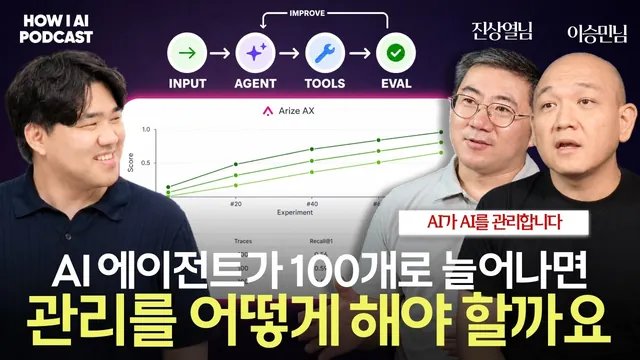

에이전트가 늘어날수록 사람이 할 일은 줄어듭니다, 대신 판단 기준을 만들어야 합니다 (Arize AI 이승민·진상열님)

원본 영상 보기 →
- 에이전트가 실행을 맡을수록 사람의 일은 '판단 기준을 만드는 것'으로 옮겨가요
- 평가는 품질 관리가 아니라 비용 최적화 수단이에요
- '취향'과 도메인 데이터셋이 마지막 차별화예요
한 줄 요약
AI 에이전트의 내부 동작을 기록하고 평가하는 '옵저버빌리티' 회사 어라이즈 AI의 이승민·진상열 님이 나온 팟캐스트예요. 핵심 메시지는 이렇습니다. 에이전트가 실행을 맡을수록, 사람에게 남는 일은 "무엇이 좋은 답인가"라는 판단 기준(평가·데이터셋)을 만드는 쪽으로 옮겨간다는 거죠. LG유플러스·커서/윈드서프 사례와 라이브 시연까지 곁들여 풀어냅니다.
전체 내용 정리
어라이즈 AI는 'AI 에이전트를 위한 엑스레이'예요 — 왜 옵저버빌리티가 필요할까요
어라이즈 AI는 2020년에 설립된 AI 옵저버빌리티 전문 회사로, 포춘 500대 기업 중 100곳이 쓰고 있어요.
이승민 님은 이 회사를 "엑스레이나 MRI를 찍는 회사인데 대상이 사람이 아니라 AI 에이전트"라고 설명합니다. 챗GPT를 쓸 때 뒤에서 무슨 일이 일어나는지 우리가 볼 수 없잖아요. 기업이 만든 에이전트도 내부 동작을 모르면 어디서 잘못돼 이상한 답이 나왔는지 분석할 수 없죠.
옵저버빌리티는 한마디로 "에이전트의 모든 동작을 다 기록해서 쌓는 것"이에요. 여기에 평가(리밸류에이션)를 더하면 인사이트라는 결과가 나옵니다.
특히 금융·의료·국방처럼 오류 1%도 허용되지 않는 규제 산업은 감독 당국이 증적 자료를 요구해요. 기록을 쌓아두지 않으면 대응 자체가 불가능하죠. 실제로 국내 한 기업은 에이전트를 다 만들고 보도자료까지 뿌린 상태에서 심사에 탈락해 런칭을 못 했다고 합니다.
규제 산업이 아니어도 마찬가지예요. 트래블 에이전트가 프랑스 니스 대신 미국의 같은 이름 도시로 항공권을 예약해버리면 고객은 그 브랜드를 떠나겠죠. 왜 그런 판단을 했는지 알려면 일단 다 쌓아야 합니다.
트레이스는 어떻게 쌓일까요 — 스팬과 오픈 인퍼런스 표준
어라이즈는 에이전트의 모든 액션을 시작과 끝이 있는 최소 단위로 쪼개고, 이 단위를 '스팬(span)'이라고 불러요. 에이전트가 1개든 수천 개든 나노초 수준까지 각각의 액션을 관찰해 하나하나 로그로 남깁니다.
이때 쓰는 자체 데이터 규격이 '오픈 인퍼런스(Open Inference)'인데요. 업계에서 오래 쓴 '오픈텔레메트리(OpenTelemetry)'를 기반으로 LLM 가시성 요소를 추가한 버전이에요.
규격만 통일해두면 랭체인으로 만들든 파이썬·자바스크립트로 만들든 상관없이 하나의 규격으로 모든 에이전트를 추적할 수 있습니다. 이 덕분에 오픈 인퍼런스는 사실상의 글로벌 표준으로 자리 잡아가고 있어요.
평가(이벨)의 네 단계: 엑셀 수작업에서 에이전트 평가까지
평가는 시대에 따라 4단계로 진화했어요.
2018~2022년까지는 두 가지뿐이었습니다. 첫째는 사람이 엑셀 파일에 직접 마킹하는 휴먼 이벨이에요. 톰슨로이터에서는 변호사 200명에게 엑셀을 뿌리고 걷어서 데이터셋을 만들었다고 해요. 가장 비싸지만 가장 고품질이죠. 둘째는 정규식 같은 규칙을 넣어 특정 단어의 유무로 판별하는 코드 이벨입니다.
2022년 챗GPT 등장 이후 세 번째로 LLM 이벨이 열렸어요. 사람보다는 떨어지지만 인간에 준하는 지능으로 경향성은 측정할 수 있거든요(오늘 55점, 일주일 뒤 65점이면 나아진 거죠). 그래서 모든 업체가 도입했습니다.
하지만 LLM 이벨은 한계가 확인됐어요. 바꿀 수 있는 요소가 '모델'과 '평가 프롬프트' 딱 두 개뿐이라 인간 전문가의 도메인 지식을 온전히 담지 못한다는 거죠.
그래서 올해 어라이즈가 내놓은 네 번째가 에이전트 이벨입니다. 전문가급 지식을 담은 복잡한 에이전트를 만들어 그 에이전트에게 평가를 시키면, 가장 고급인 휴먼 이벨에 준하는 결과를 얻을 수 있어요.
LLM 이벨과 에이전트 이벨의 차이는 앤드루 응의 2024년 강연으로 설명됩니다. 그는 GPT-3.5로 GPT-4.5 이상의 성능을 뽑아내는데요. 방법은 모델을 세 번 나눠 부르는 거예요. 먼저 리서치(툴 콜링)하고, 직접 글을 쓰고, 마지막에 리뷰합니다.
이렇게 여러 모델 호출을 하나의 워크플로우로 묶은 것을 '에이전틱 워크플로우', 요즘 용어로는 '하네스(harness)'라고 불러요.
평가에도 같은 원리가 적용됩니다. LLM을 한 번 부르면 부정확해도, 여러 번을 워크플로우로 묶고 중간에 웹서치(그라운딩)로 현재 라이브 데이터까지 검증하면 정확도가 올라가요. 에이전트 평가는 LLM 평가의 업그레이드판인 셈이죠.
평가가 곧 비용 절감이에요 — LG유플러스, 커서 vs 윈드서프
평가가 왜 돈이 될까요. 품질을 숫자로 확인할 수 있으면 비싼 프론티어 모델을 값싼 모델로 갈아끼울 수 있거든요.
지금 오퍼스급 모델을 쓰다 비용 문제가 생기면, GLM이나 퀸 같은 오픈소스 모델로 대체하고 평가를 돌려 약점을 찾아 하네스(워크플로우)를 보강합니다. 같은 품질 또는 그 이상을 내면서 운영비는 3분의 1로 줄일 수 있어요.
LG유플러스가 올해 6월 발표한 사례가 이겁니다. 프론티어 모델을 벤치마크로 두고 단순 작업은 전부 자사 모델로 빼서 전체 비용을 낮췄고, 소형 모델이라 응답 속도까지 빨라졌다고 해요.
커서와 윈드서프의 경쟁도 비용 관리가 큰 차이였습니다. 커서는 자체 모델로 비용을 커버한 반면, 윈드서프는 모델 비용을 앤트로픽·GPT에 고스란히 냈어요. 그래서 고객이 늘수록 적자가 커지는 구조였죠.
2026년, 특히 하반기 글로벌 트렌드는 "당신 에이전트가 ROI가 나오느냐"는 질문이에요. 클로드 코드에 반드시 클로드 모델만 묶어 쓸 이유는 없고, 선택지를 유연하게 가져가되 그 결정을 감이 아니라 정량 평가로 내려야 한다는 겁니다.
평가는 비용 관리뿐 아니라 사고 예방, 사용자 행동 유도에도 쓰여요. 예를 들어 회사가 직원들에게 클로드 코드를 사줬다면, 규칙 기반 평가로 대화 중 주식·부동산·코인 이야기가 몇 %인지 측정하고, 결과를 시스템 프롬프트(CLAUDE.md)에 반영해 업무 무관 대화를 막을 수 있죠.
진짜 병목은 데이터셋 — '취향'을 뽑아내는 일
이 모든 것을 하려면 결국 데이터셋이 필요한데요. 이승민 님은 지금 가장 큰 병목이 데이터셋이라고 봅니다.
데이터셋은 "좋은 것과 나쁜 것을 구별할 수 있는 것"이에요. 커피로 치면, 호불호가 없는 사람은 추천을 못 하지만 바리스타는 좋은 커피와 나쁜 커피를 정확히 가르잖아요. 그 사람 머릿속의 판단 기준, 곧 취향을 AI가 읽을 수 있는 형식으로 추출한 것이 데이터셋입니다.
문제는 훌륭한 도메인 전문가는 바쁘고 비싸며, 그 노하우가 곧 자기 직업 안정성이라 쉽게 나눠주지 않는다는 점이에요.
진상열 님은 좋은 데이터셋이란 우리의 오타와 실수마저 자연스럽게 들어가는 환경이어야 한다고 덧붙입니다. 결국 회사 고유의 패턴과 오류가 담긴 데이터셋은 그 회사만 가질 수 있는 IP이자 차별화 포인트가 되는 거죠. 그런 데이터셋이 있으면 평가는 자동으로 따라옵니다.
공개 벤치마크는 이미 대부분 학습 데이터로 흡수돼 모델이 과적합돼 있어서 완전히 신뢰하기 어려워요. 그래서 앞선 기업들은 커스텀 벤치마크로 눈을 돌렸습니다.
이 트렌드를 이끄는 곳이 대(對)고객 에이전트 제작사인 시에라 AI예요. "2000년 이후 모든 회사에 홈페이지가 생겼듯 2022년 이후엔 모든 회사에 대고객 에이전트가 생길 것"이라는 비전 아래, '타우벤치(τ-bench)'라는 도메인별(항공·은행·통신 등) 벤치마크를 공개했죠. 다만 이건 방향을 제시하는 공개 벤치마크일 뿐, 실제 기업은 이걸 기반으로 자사만의 클로즈드 벤치마크를 가져야 합니다.
라이브 시연과 셀프 임프루빙 루프
이승민 님은 해외 강연용 실시간 번역기를 바이브 코딩으로 만들어, 하이쿠·그록(엔비디아에 인수된 Groq의 퀸 모델)·XAI의 그록 세 모델을 붙여 비교했어요.
예전 같으면 영어를 아는 사람이 듣고 "이 모델이 낫네" 하는 '바이브 체크'로 끝났겠죠. 이번엔 대화가 전부 어라이즈로 들어가 백엔드에서 자동으로 평가가 돌았습니다. 지연 시간은 그록이 빠르고, 번역 품질 점수는 XAI 그록이 높게 나왔어요. 이제 감이 아니라 정량적인 숫자로 아키텍처에 맞는 모델을 확정할 수 있는 거죠.
시작은 어렵지 않아요. 어라이즈의 오픈소스 '피닉스(Phoenix)'는 무료라 도커 허브 이미지를 받아 구동만 하면 바로 트레이스가 쌓입니다(한국에서는 랭퓨즈도 유명해요). 클로드 코드·코덱스 같은 개발 에이전트에 플러그인을 붙여 평소대로 쓰면서 기록만 모으는 방법도 있고요.
허깅페이스에는 웬만한 벤치마크 데이터셋이 다 올라와 있어서, 에이전트 버전1을 만들어 점수를 내고 "다음 달엔 24점 → 47점"처럼 스스로 목표를 잡을 수 있습니다.
프롬프트도 어라이즈의 '옵티마이즈' 기능에 데이터셋만 물리면, 한 줄짜리 프롬프트를 AI가 예시와 규칙을 붙여가며 탄탄한 프롬프트로 스스로 고쳐줘요. 프롬프트 엔지니어가 필요하던 일이 자가 개선으로 바뀐 거죠.
더 나아간 것이 셀프 임프루빙 루프입니다. 이승민 님은 사람 개입 없이 AI가 3일 동안 83번의 실험을 자동으로 돌리게 했어요.
검색된 문서 10개 안에 정답이 있을 확률인 '리콜'이 처음 52%에서 시작했는데요. AI가 하이드(HyDE)·리랭커·임베딩 모델·청크 크기를 알아서 바꿔가며 테스트하더니 결국 90~91점까지 스스로 끌어올렸습니다. 매 실험마다 결과를 수치로 남기고, 그 결과에 대해 다시 AI가 "이 점수가 나온 이유는 이것"이라고 피드백을 주며 무한 반복하는 구조예요.
톰슨로이터 시절엔 변호사 200명이 6개월을 일해 정확도 3%를 올렸는데요. 지금은 루프를 3일 돌려 나온 결과라는 겁니다.
루프 엔지니어링의 핵심은, 인간이 선입견·시간 제약·게으름 때문에 가보지 않은 조합을 AI가 시도해 돌파구를 찾는다는 점이에요. 바둑에서 알파고가 이세돌을 이길 때 둔 의외의 수 '무브 37'처럼, 인간이라면 테스트하지 않았을 시나리오에서 발견이 일어나죠. 신약 개발도 이 방식을 큰 스케일로 하고 있습니다.
인수 소식, 그리고 AI 시대에 마지막까지 남는 것
어라이즈 AI는 최근 한 회사에 인수됐다는 소식이 있었어요(전사 STT 특성상 인수사 이름은 명확히 확인되지 않습니다).
진상열 님의 설명은 이렇습니다. 지금까지는 어라이즈가 'AI 엔지니어링 플랫폼'으로 스스로를 AI 영역에 가둔 면이 있었는데요. 실제 고객의 서비스 생태계는 네트워크·인프라·AI 서빙 레이어·애플리케이션이 하나로 모여 돌아가거든요.
운영자 입장에서 AI용 대시보드 따로, 클라우드 인프라 따로, 애플리케이션 따로 보는 건 번거롭잖아요. 그래서 인프라·애플리케이션·데이터베이스 관측까지 아우르는 토탈 패키지로 발전할 환경이 생겼다는 거예요. 어라이즈 브랜드와 이승민 님이 이끄는 커뮤니티는 그대로 유지되고, 고객이 체감하는 변화는 없을 거라고 합니다.
이승민 님은 자신의 역할을 '문익점'에 비유했어요. 북미·글로벌의 앞선 에이전트 유즈 케이스를 한국에 소개하고, 한국에서도 글로벌 에이전트가 나오도록 데이터셋·벤치마크·평가·비용 최적화를 지원하고 싶다고요.
마지막 질문은 "AI 시대에 일하는 방식이 어떻게 바뀔까"였습니다.
이승민 님은 AI 시대에 어떤 직종이 반짝 떴다가 금세 사그라드는 걸 많이 봤다고 해요. 프롬프트 엔지니어링은 몇 년 안에 정복됐고, 지금 각광받는 'AI 엔지니어'의 오케스트레이션 레이어 작업도 상당 부분 루프 엔지니어링으로 커버될 거라고요.
이렇게 하나씩 지워 나가면 마지막에 남는 건 '취향'입니다. 취향만이 사람 고유의 것이고, 단기간에 만들어지지 않거든요(커피처럼 실패를 많이 해봐야 좋은 취향이 생기죠).
그러니 탐구의 방향을 자기 취향, 자기 도메인(금융인지 의료인지 법률인지)으로 잡으세요. 그다음 어라이즈 같은 도구로 가시성을 확보하고, 허깅페이스를 보며 앞선 사람들의 데이터셋 구성법을 배워 내 데이터셋을 고유하게 만들어가면, 1인 기업으로도 충분히 성공할 수 있는 비즈니스를 만들 수 있다는 게 결론이에요.
핵심 인사이트
- 에이전트가 실행을 맡을수록 사람의 일은 '판단 기준을 만드는 것'으로 옮겨가요: 프롬프트 작성도, 워크플로우 설계도 자동화(루프 엔지니어링)로 흡수되는 중입니다. 남는 건 "무엇이 좋은 답인가"를 정의하는 평가 기준과 데이터셋이며, 이게 곧 개인·회사의 고유 자산이 되죠.
- 평가는 품질 관리가 아니라 비용 최적화 수단이에요: 정량 평가가 있으면 품질을 지키면서 비싼 프론티어 모델을 소형·오픈소스 모델로 갈아끼워 운영비를 3분의 1까지 줄일 수 있습니다(LG유플러스). ROI를 증명하지 못하는 에이전트는 2026년 하반기부터 살아남기 어려워요.
- '취향'과 도메인 데이터셋이 마지막 차별화예요: 공개 벤치마크는 이미 학습에 흡수돼 신뢰가 어렵고, 회사·개인 고유의 판단 기준(실수까지 포함한)을 AI가 읽을 수 있는 데이터셋으로 만든 것만이 남습니다. 그래서 "내 도메인의 전문가가 되는 것"이 기술 습득보다 우선하죠.
오늘 당장 해볼 것
- 내 업무에서 '잘된 결과물'과 '잘못된 결과물'을 각각 5~10개씩 나란히 모으고, "이건 왜 좋고 이건 왜 별로인가"를 한 줄씩 붙여보세요. 이 기록이 나중에 나만의 평가 기준이자 데이터셋이 돼요.
- AI와 반복 작업을 할 때 어떤 프롬프트로 어떤 답을 받았는지 기록을 남겨보세요. 무료 오픈소스인 피닉스(Phoenix)를 도커 허브 이미지로 띄우거나, 클로드 코드에 어라이즈 플러그인을 붙이면 자동으로 트레이스가 쌓입니다.
- 허깅페이스(Hugging Face)에서 내 분야와 비슷한 벤치마크 데이터셋을 하나 내려받아, 지금 쓰는 프롬프트나 에이전트로 점수를 내보세요. 그리고 "다음 달까지 X점 → Y점"처럼 개선 목표를 숫자로 잡으시면 좋아요.